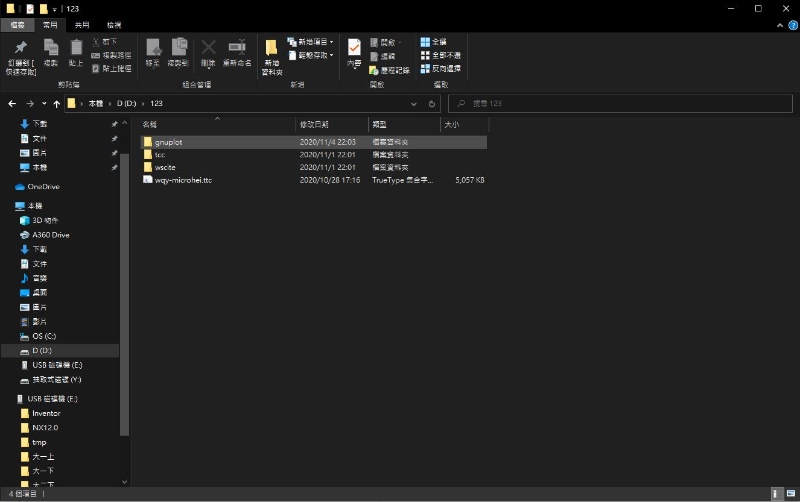
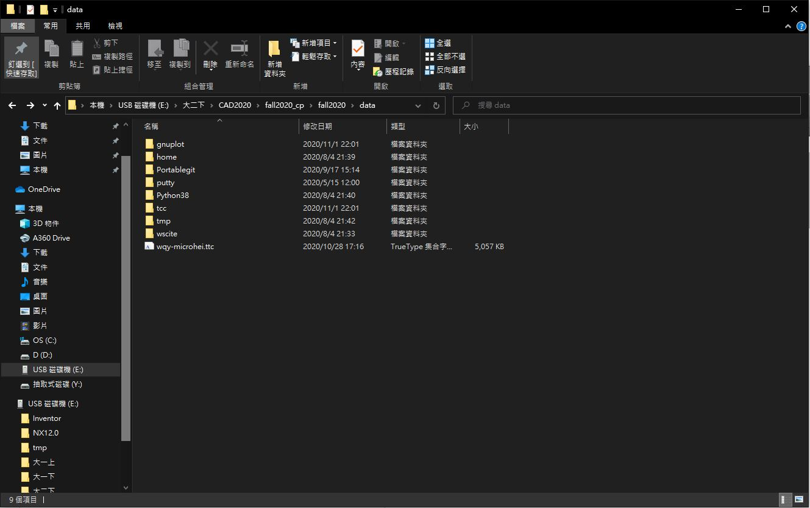
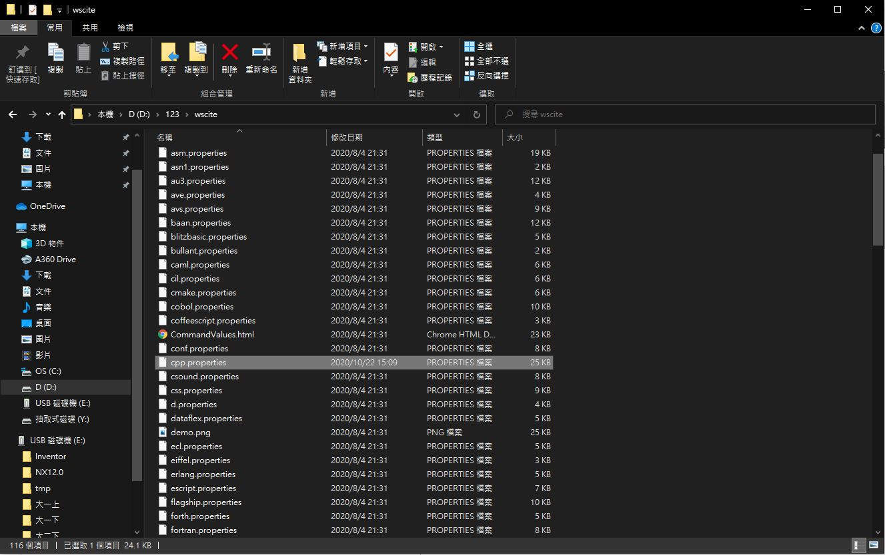
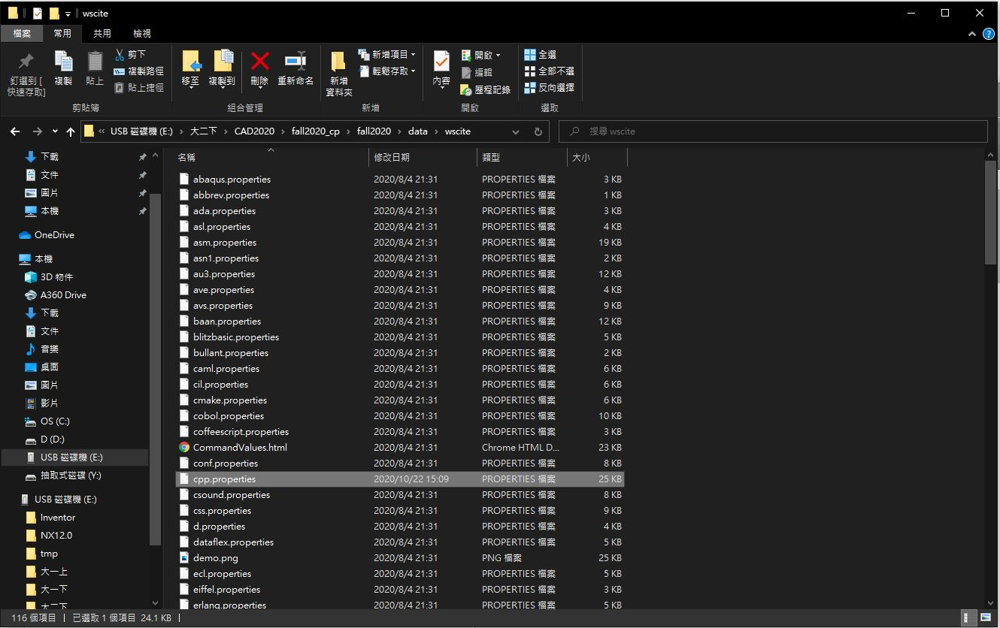
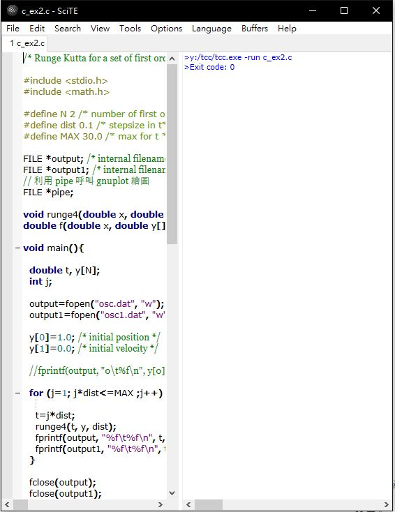
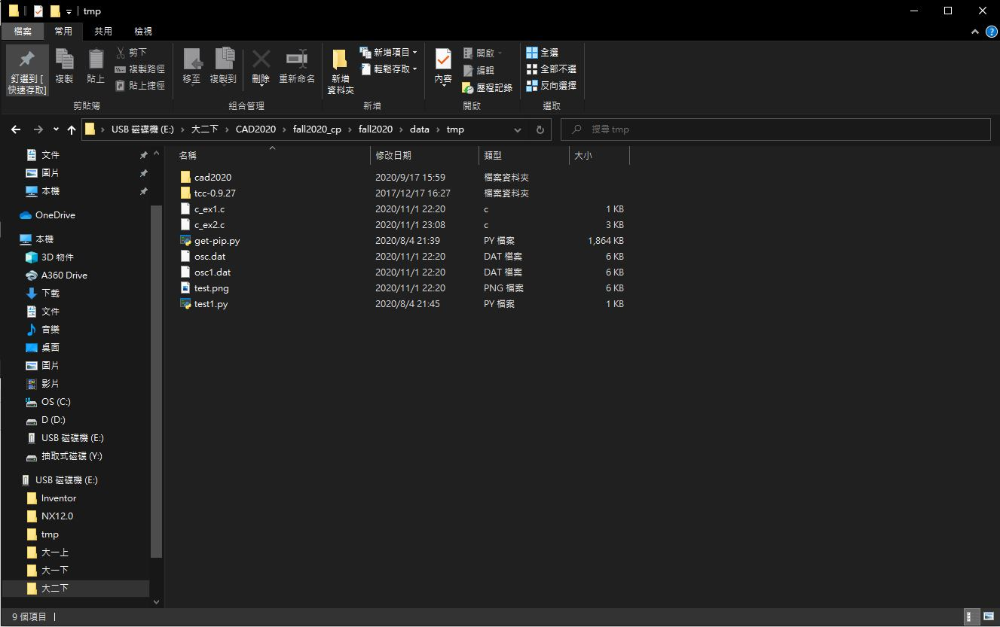
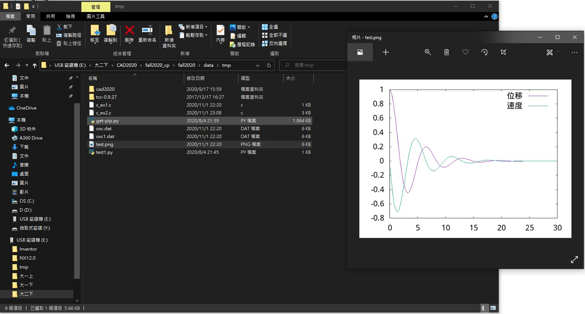

W6 <<
Previous Next >> W8
W7
利用SciTE編輯器類解譯ANSI C程式並, 建立ANSI C程式環境
下載cad2020_w7_tcc_gnuplot.7z解壓縮至自己的資料夾

將gnuplot, tcc資料夾, wqy-microhei.tcc文字檔剪下-->data資料夾下與tmp同層

修改start.abt路徑

set path_git=%Disk%:\Portablegit\PortableGit\bin;
set path_tcc=%Disk%:\tcc\;
set path_gnuplot=%Disk%:\gnuplot\bin;
path=%Disk%:;%path_python%;%path_git%;%path_tcc%;%path_gnuplot%;
使用下載的cad2020_w7_tcc_gnuplot.7z裡的wscite資料夾將cpp.properties批次檔複製出

放置fall2020/cad2020/data/wscite下覆蓋原有的cpp.properties批次檔

即可執行下列程式



W6 <<
Previous Next >> W8